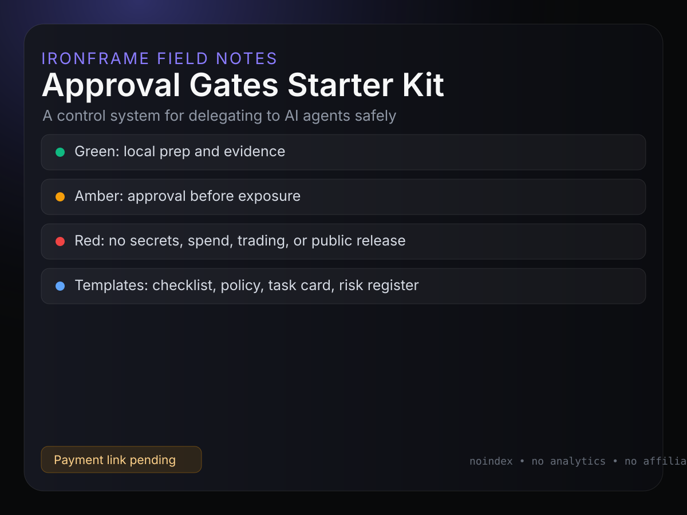
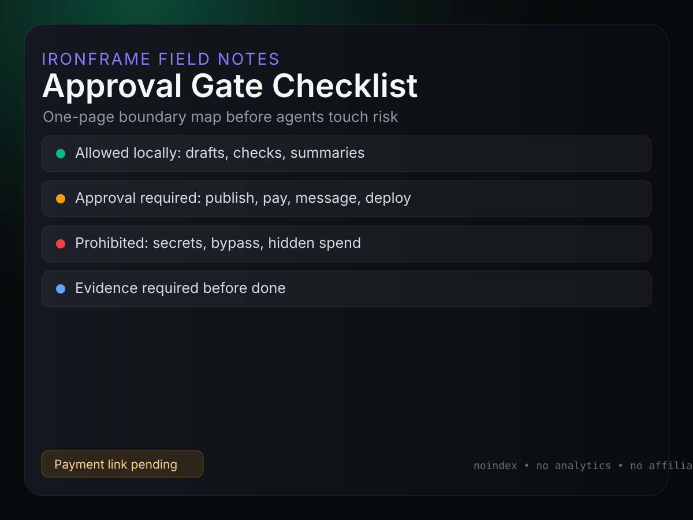
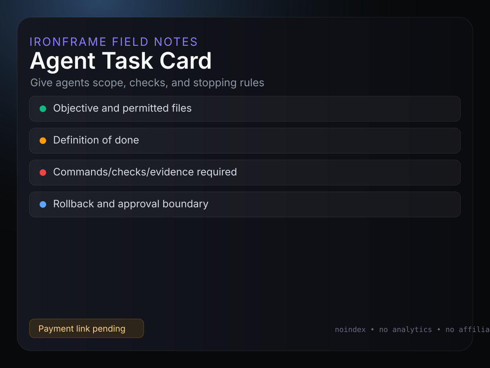
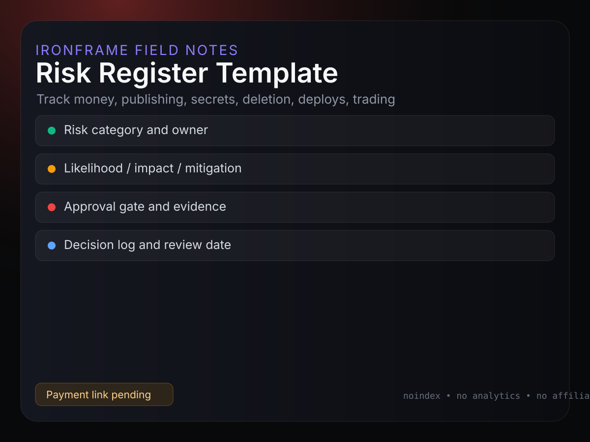

Stop your AI agents before they quietly cross the line.
A practical approval-gate kit for founders using AI agents, code assistants, and automation tools — so you get useful autonomy without silent spending, publishing, customer messaging, secrets exposure, deletion, production changes, or trading risk.
The agent did not need to be malicious. It only needed a vague instruction, broad account access, and no explicit rule saying “stop here and ask”. This kit gives founders a simple operating policy before they wire agents into publishing, money, credentials, customer messages, code, or market accounts.
Without gates
“Go make this happen” turns into hidden external risk.
With gates
Agents prepare work, record evidence, and stop before exposure.
Included
Inside the Starter Kit
01
AI Agent Approval Gate Checklist One-page founder control surface with green, amber, and red boundaries.
02
Agent Permission Matrix Green / Amber / Red action classes with evidence requirements.
03
First 7 Days of Agent Delegation A safe first-week playbook before widening permissions.
04
Founder AI Autonomy Policy Editable policy for allowed, approval-required, and prohibited actions.
05
Agent Task Card Template Scope, definition of done, checks, evidence, and rollback path.
Built for founders who delegate but still own the risk.
Solo founders using Claude Code, Codex, Hermes, ChatGPT, browser agents, or automation agents.
Operators building a local AI office or agent workflow.
Creators turning AI workflows into content/product systems.
Small teams that need agent help but cannot tolerate silent external risk.
Not for
Guaranteed passive-income claims.
Unreviewed real-money trading bots.
Spam outreach systems.
Bypassing privacy, security, compliance, or platform rules.
Control model
Red / amber / green is the whole point.
Green
Prepare local drafts, inspect files, run safe checks, summarize evidence, and propose next steps.
Amber
Publish, spend, message customers, connect accounts, deploy, delete, or change public/payment surfaces only after explicit approval.
Red
Never expose secrets, bypass login, invent credentials, release private details, or run real-money trading/spend without approval.
10-minute proof strip
What a buyer can do before widening agent permissions.
The kit is designed to produce a useful control surface in one short setup session, without requiring consulting, SaaS setup, analytics, or sensitive integrations.
01
Classify the next agent task. Use the permission matrix to decide whether the task is green, amber, or red before the agent begins.
02
Write the stop rule. Add the exact approval boundary for spending, publishing, messaging, secrets, deletion, deployment, or trading.
03
Demand evidence. Use the task card to require file paths, checks, screenshots, links, hashes, or a rollback note before work is marked complete.
Use case
Example: “prepare the launch page, but do not publish.”
Green: draft copy, inspect existing product files, create local screenshots, and run link checks.
Amber: add a payment link, change public metadata, send launch posts, or connect platform accounts.
Red: type passwords, expose private details, invent guarantees, self-purchase with real money, or enable analytics without approval.
This is the practical promise: agents can move the work forward while leaving a visible decision point before external risk.
Free-to-paid ladder
Start with the free checklist. Upgrade only if you need the full operating pack.
This product now has a clean content funnel: a short problem/proof post can point people to a free approval-gate checklist first, then the Starter Kit if they want the editable policy, permission matrix, task card, risk register, and first-week playbook.
01
Comment keyword: GATES Draft CTA: “Comment GATES and I’ll send the free approval-gate checklist.” No automation is live in this local draft.
02
Free asset first The checklist is useful on its own: define green, amber, and red agent actions before adding more tools.
03
Low-ticket kit second The paid kit expands the checklist into a reusable operating system for agent delegation.
Premium boundary
Optional review/audit is not active yet.
A future premium step could review one workflow, one permission matrix, and one risk register. It is deliberately not offered until support capacity, pricing, privacy handling, and delivery boundaries are approved.
No “done for you” implementation promise is active.
No guaranteed safety, income, legal, compliance, or cybersecurity outcome.
No email capture, analytics, DM automation, or payment link is live from this page.
Agent-readable buyer surface
What an assistant should understand before recommending this kit.
This page now exposes the buying facts clearly enough for a human or AI assistant to judge fit without guessing: the product is a downloadable operating pack, the launch hypothesis is £9, the buyer problem is permission control before wider agent autonomy, and the support boundary excludes custom implementation, legal/compliance/security advice, income guarantees, analytics, and checkout until a verified seller route exists.
Good fit
Founders, operators, consultants, and creator-builders who already delegate work to AI agents and need green/amber/red rules, evidence targets, and stop points.
Not a fit
Buyers looking for done-for-you automation, guaranteed safety, legal/security certification, passive income, trading bots, or access to private IronFrame systems.
Decision state
Preview and free checklist are live. Paid checkout is deliberately disabled until the IronFrame-controlled seller platform passes identity, currency, and live-payment checks.
Preview assets
Product visuals ready for listing pages.
These images are safe local/source assets for Lemon Squeezy, Gumroad, or an IronFrame landing page. They do not contain private details, active checkout links, or tracking code.




Disclosure
Current boundary
This page is a public preview, updated from the local v0.2 product draft. It has no live payment button, no email capture, no affiliate links, no analytics, no pixels, no coupons, no public claims, and no published launch campaign. A live buy button requires a verified IronFrame-controlled seller-platform URL and no hard-gate prompts.
Current platform blocker: Lemon Squeezy country/currency/store activation requires correction before any live payment link is trusted. Gumroad fallback is prepared but not published.